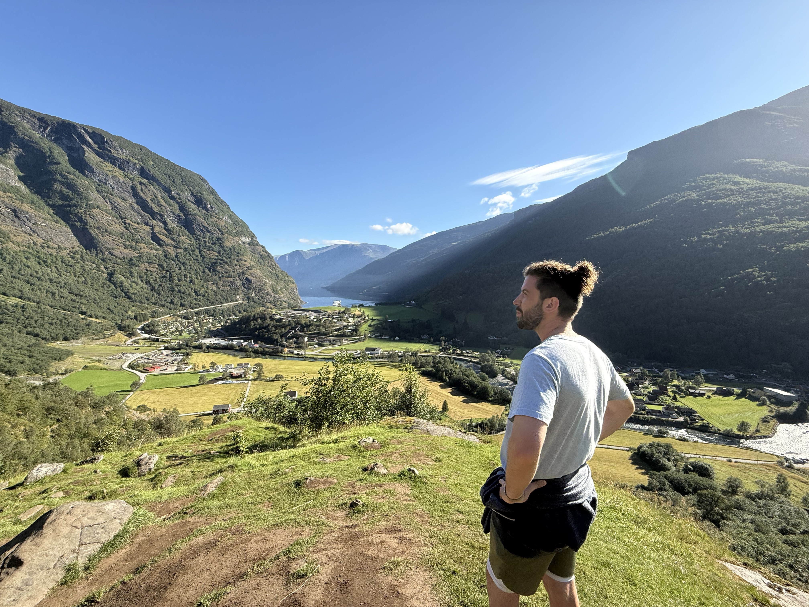

About Me

I'm Jonathan Rothe, an IT Innovation student at the University of Nebraska at Omaha with a minor in cybersecurity and MIS. My academic path and professional work reflect my curiosity for how technology can be built, secured, and scaled to solve real problems.
Currently, I work at Toast, where I advanced from a Payments Expert role into API Integrations. In this position, I troubleshoot and support integrations that connect restaurants to external systems, giving me hands-on experience with REST APIs, authentication methods, and log analysis. I've also gained practical exposure to Splunk, using it to parse logs, build searches, and support incident investigations.
At UNO, I've taken on projects that range from building small virtual labs with Linux and Windows endpoints, to practicing offensive and defensive techniques with penetration testing tools, to exploring security governance and standards. I also run my own homelab, hosting services like Nextcloud and Pi-hole on Raspberry Pi and Ubuntu servers, which keeps me learning beyond the classroom.
My interests sit at the intersection of cybersecurity, innovation, and AI. I'm especially curious about how security and automation overlap, and how data from tools like Splunk can be enriched with machine learning to improve threat detection and response.
Outside of work and school, I'm committed to personal growth and creativity. I enjoy flying my drone, capturing and editing video for my YouTube channel, traveling, working out, and exploring how technology connects people to experiences. Long-term, I see myself building a career that blends deep technical expertise with global perspective — living and working across cultures while contributing to the safety and innovation of the digital world.
Skills Snapshot
- Cybersecurity & IT Security: Penetration testing, digital forensics, risk analysis, and daily Hack The Box / TryHackMe labs.
- Network Security & Monitoring: Wireshark traffic analysis, Nmap scanning, firewall hardening, SSH and segmentation best practices.
- Cloud & Infrastructure: Secure self-hosted Linux cloud, AWS (EC2, VPC, RDS, S3, Lambda), Docker, Hyper-V, and virtualization management.
- Homelab Engineering: Kali, Ubuntu Server, Raspberry Pi builds, Windows Server administration, smart home automation, and system hardening.
- Programming & Automation: Python, Bash, PowerShell, SQL, Java, JavaScript, HTML, CSS, Vue.js, Django, RESTful API development.
- AI & Data Tools: Local LLM deployment with Ollama/LMStudio, AI voice cloning, Splunk log analysis, automation with ChatGPT Plus.
- Professional Tools & Support: API troubleshooting with Postman, Salesforce and JIRA workflows, customer-facing tech support at Toast.
- Leadership & Communication: Founding president of UNO Mindfulness Club, technical writing, cybersecurity presentations, cross-team collaboration.